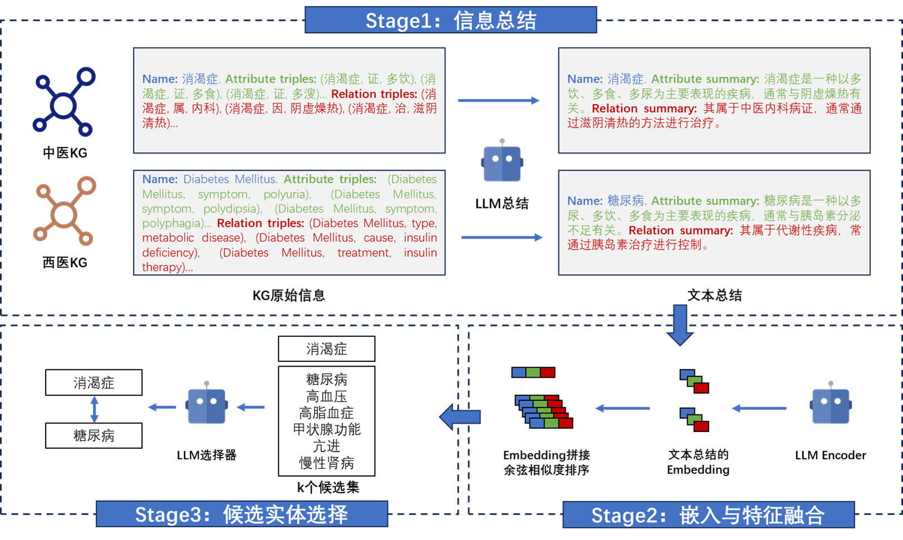

01
本轮主攻
政策知识图谱
为康养服务提供合规边界。
面向“主动健康管理”，结合企业现有的康养知识图谱，与已采用“平台+数据与知识 + 大模型+ 智能体”的架构，以在数据与知识层打通已有的中医知识图谱与西医知识图谱为例，对多源知识进行融合，为上层大模型与智能体提供统一的语义底座，用于慢病防治、疾病预防与日常康养建议。
整套康养知识图谱体系共涵盖七类子图谱，分为有开源数据可用与需构造两类。本轮两项任务聚焦其中三类核心图谱，其余四类作为后续场景扩展的接入对象。
为康养服务提供合规边界。
承载西医疾病、症状、药物、检查等标准化实体，是中西医对齐时的临床语义底座。
覆盖证候、方剂、药材、体质等中医知识，与西医图谱存在语言和知识体系双重异构，是融合 Demo 的关键难点所在。
组织机构、服务类型、人员与地理资源的映射层，后续用于承接政策约束和场景推荐结果。
描述老人、家庭、机构、地理等社会关系，为个体化康养路径和场景演示提供承载对象。
描述设备、机构、服务、老人之间的配置关系，用于后续展示场景感知和设备联动。
围绕辅具、疾病、量表、老人构建推荐逻辑，用于后续补充康复与适配场景。
两项任务分别对应政策知识图谱自动化构建与中西医知识图谱融合
均以 5 月 30 日可演示为阶段目标。
企业方提供政策文本爬取能力
负责设计从政策文档到结构化知识图谱的自动化构建链路
涵盖本体生成、条款抽取、图谱入库与合规输出四个环节。
中西医知识图谱融合的核心技术挑战是实体对齐
找出跨体系图谱中指向同一真实概念或高度相关概念的实体对
设计了一套三阶段 LLM 驱动的对齐方案直接由大模型驱动端到端对齐流程
